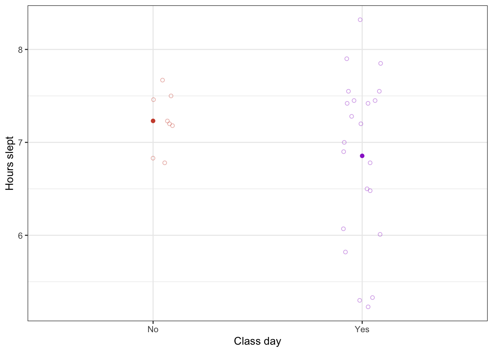
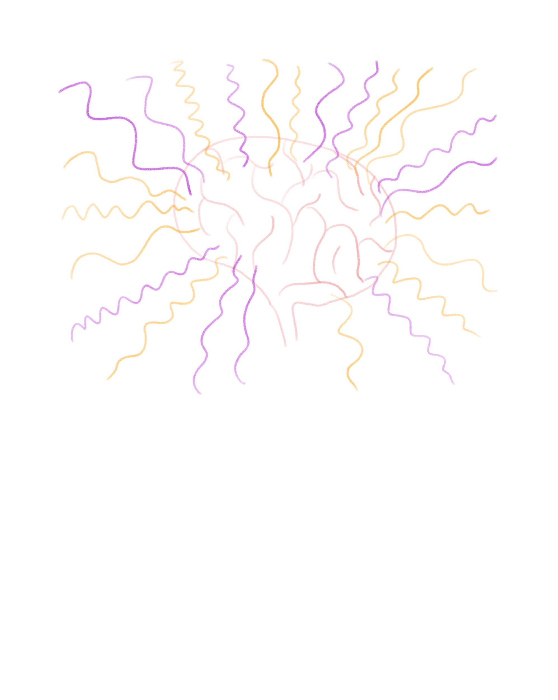
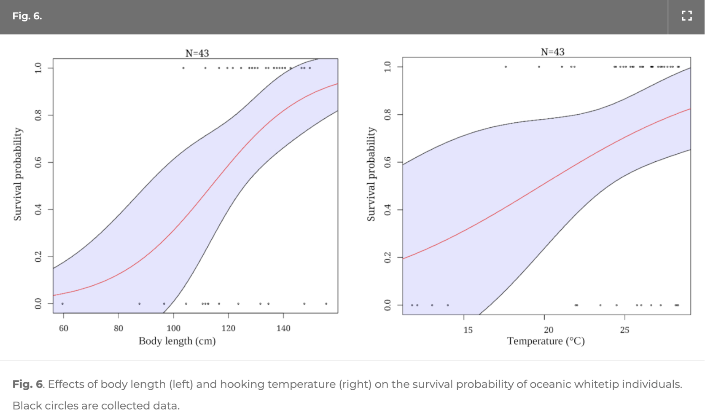

library(tidyverse) # general use
library(here) # file organization
library(janitor) # cleaning data frames
library(readxl) # reading excel files
library(flextable) # reading in the flextable package
sleep_data <- read_xlsx( #reading in an excel file
here("data", "ENV S_193DS_data.xlsx") #file path to personal data
)ENVS 193DS Homework 3
https://github.com/sofie-f7/ENVS-193DS_homework-03
Set up
Problem 1.
a.
I could calculate the mean number of hours slept to compare average hours slept on days that I have class compared to days that I don’t have class. This is because I think that having classes the following day makes me more anxious the night before, and therefore makes me sleep less.
b.
sleep_sum <- sleep_data |> #start with sleep_data dataframe
group_by(class_day) |> #group by class day (yes or no)
summarize(mean = mean(hours_slept)) #calculate the mean
ggplot(data = sleep_data, #using the sleep_data data frame
aes(x = class_day, #make the x-axis class day
y = hours_slept, #make the y-axis hours slept
color = class_day)) + #coloring points by class day
#first layer: showing underlying data
geom_jitter(height = 0, #no jitter in the vertical direction
width = 0.1, #smaller jitter in horizontal direction
alpha = 0.4, #make the points more transparent
shape = 21) + #make the points open circles
#second layer: showing the summary (mean)
geom_point(data = sleep_sum, #using sleep data dataframe
aes(x = class_day, #x-axis is class day
y = mean)) + #y-axis is the mean
labs(x = "Class day", #label x-axis
y = "Hours slept",) + #label y-axis
scale_color_manual(values = c("Yes" = "darkorchid3",
"No" = "tomato3")) + #change from default colors
theme_bw() + #use a preferred theme
theme(legend.position = "none") #remove legend
c.
Figure 1. Nights that don’t precede a class day tend to have a higher mean hours slept. Points represent observations of number of hours slept on days that I have class (n = 22) and days that I do not have class (n = 8). Colors represent class days and non-class days (red circles: non-class day, purple circles: class day). The mean hours slept are shown for both types of day as the filled-in points. Data collected in Spring 2025 for ENVS 193DS class.
d.
sleep_sum |> #using summary dataframe
mutate(Mean_hours_slept = round(mean, 1)) |> #round the mean
select(class_day, Mean_hours_slept) |> #select the class day column and the rounded mean
rename( #rename to readable text
"Class day" = "class_day", #rename class_day to Class Day
"Mean hours slept" = "Mean_hours_slept" #rename Mean_hours_slept to Mean hours slept
) |>
flextable() #add this to a flextable and displayClass day | Mean hours slept |
|---|---|
No | 7.2 |
Yes | 6.9 |
Problem 2.
a.
For my personal data, an affective visualization could look like a drawing that conveys emotion, where the priority is creativity and novelty. I am thinking to draw a brain in the middle of a paper, and then draw brain waves that occur during sleep coming out from the brain. The brain waves will fill the whole rest of the page, giving the brain a sun-like appearance. Each brain wave will represent one observation, the frequency will represent how many hours I slept, and the color will indicate a class day or non-class day.
b.

c.


d.
My drawing depicts a brain with sleep brain waves seemingly coming out of it. Each brain wave represents one observation. Blue brain waves represent class days, and green brain waves represent non-class days. Higher frequencies represent less hours of sleep, and lower frequencies represent more hours of sleep. I found Giogia Lupi and Stefanie Posavec’s Dear Data project very influential for my work. I took after how they used different colors and shapes to differentiate and depict the data. The form of my work is a colored pencil drawing. I created this piece by centering the concept around sleep, and thinking to use brain waves as an artistic depiction of this, especially as they are easy to use to differentiate the data visually. I then drew and colored the brain, and created a key to go by. I went through each of my observations and drew them as brain waves.
Problem 3.
a.
Multivariate logistic regression tests are included in this paper. The response variable is at-vessel mortality. The predictor variables include body length, hooking duration, time of capture, hook position, hooking temperature, and dissolved oxygen at capture.
 The x-axes of these figures are body length and hooking temperature. The y-axes of both figures are survival probability, which is another way of demonstrating at-vessel mortality. The figure is showing the effects of body length and hooking temperature on the survival probability of oceanic whitetip individuals. Larger individuals had a better chance of survival, and as hooking temperature increased, the odds of survival also increased.
b.
The authors clearly represented their statistics in the figure. The x-axes and y-axes seem to be in logical positions with informative units. The sample sizes are given at the tops of the figures. A model prediction is shown, within the underlying collected data shown as black circles on the same figures. The 95% confidence interval is shown as the purple shaded region. The figures were positioned next to each other for easy comparison of these two predictor variables.
c.
The authors seem to handle visual clutter well. The data:ink ratio is good, as almost all the elements that are shown serve the purpose of conveying information. The gridlines are taken out and there is no background color. The colors of the model prediction and the confidence interval don’t clash with each other or the background, and are easy to interpret. The figure is easy to interpret within the first couple seconds of viewing the figure.
d.
I recommend moving the sample sizes to the corners of the figures. This is because it is in the place that a title would be, which seems to draw more attention to it than other more-important parts of the figure. I would not remove it since it is a valuable statistic to share. I also recommend removing the tick marks on the axes. This will make the figures even less visually cluttered than they already are. Also, I recommend making the black points that represent individual data points more transparent, so that points that overlap are easier to interpret. In the figure caption, I would convey what the purple shaded region and the red line represent in the caption, so that a reader that is less experienced with models does not have a hard time interpreting it.